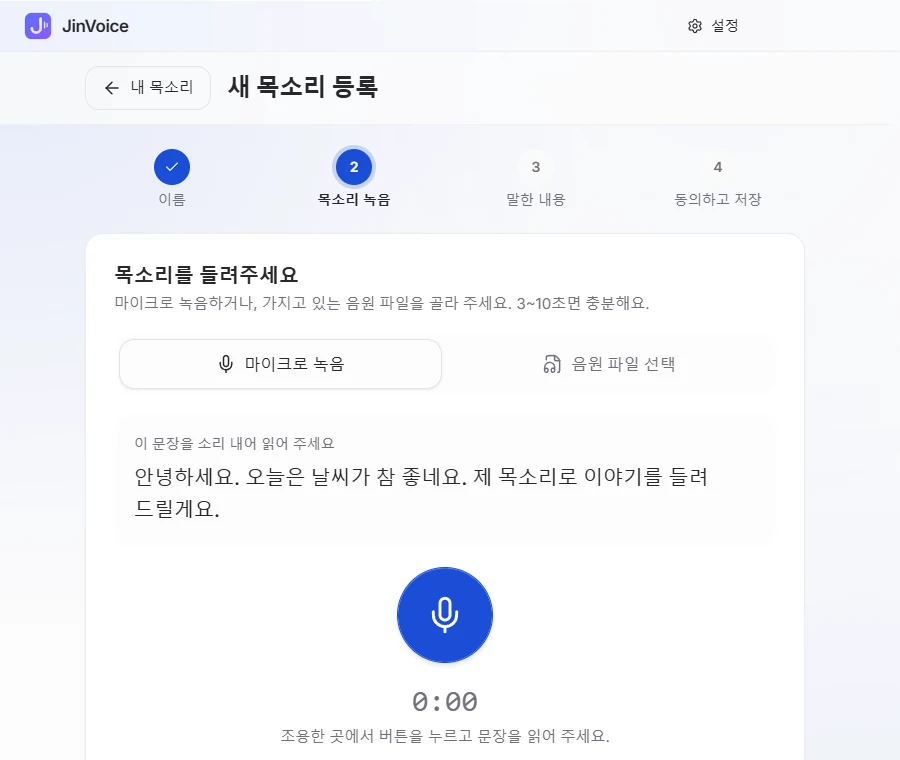
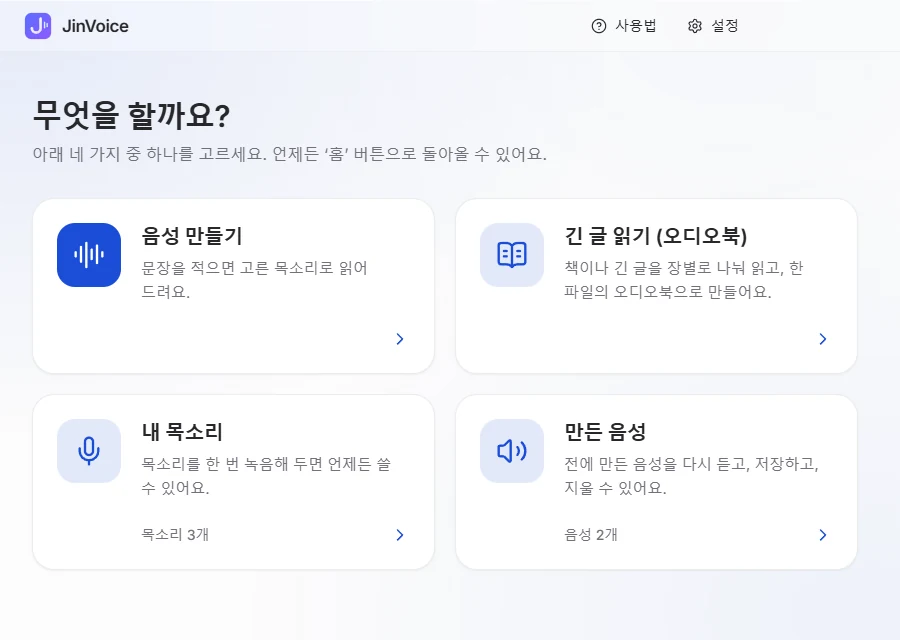
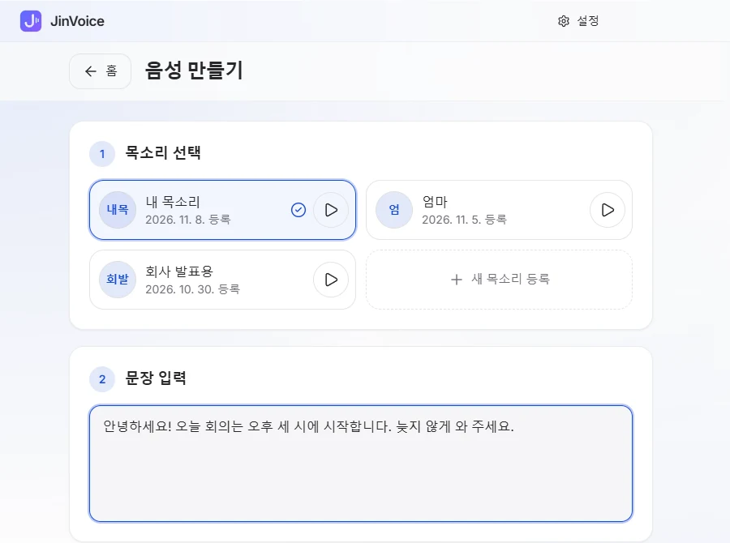
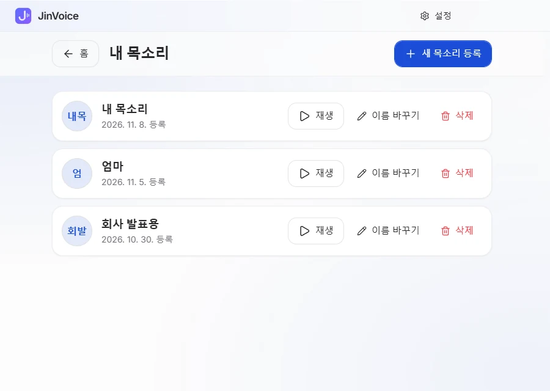
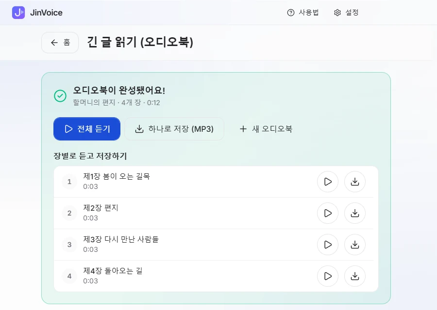

1
내 목소리를 들려주세요
화면에 나온 문장을 3~10초 동안 소리 내어 읽으면 끝. 녹음해 둔 음원 파일이 있다면 그걸 골라도 돼요.
- 마이크로 바로 녹음하거나 파일 선택
- 한 번 등록하면 언제든 다시 써요

짧게 한 번 녹음해 두면, 적어 넣은 글을 내 목소리로 또박또박 읽어 줘요. 긴 글은 장별로 나눠 오디오북으로 만들어 드려요.

처음이어도 괜찮아요. 화면에 보이는 큰 버튼만 차례로 누르면 돼요.
화면에 나온 문장을 3~10초 동안 소리 내어 읽으면 끝. 녹음해 둔 음원 파일이 있다면 그걸 골라도 돼요.

목소리를 고르고 문장을 적거나 붙여 넣으세요. 한 번에 5,000자까지 쓸 수 있고, 말하기 속도도 고를 수 있어요.

'음성 만들기'를 누르면 잠시 뒤 바로 들을 수 있어요. 마음에 들면 파일로 저장하고, 만든 음성은 목록에 차곡차곡 남아요.

첫 화면엔 버튼이 딱 네 개. 더 많은 기능은 원할 때만 꺼내 쓰면 돼요.
3~10초면 충분해요. 마이크로 녹음하거나, 가지고 있는 음원 파일을 그대로 쓸 수 있어요.

긴 글을 붙여 넣거나 텍스트 파일을 열면 알아서 장을 나눠 읽어요. 다 되면 한 파일(MP3)로 합쳐 저장할 수 있어요.

안내 방송, 편지, 발표 원고까지 한 번에 읽어 줘요.
목소리 크기를 알아서 맞춰 줘서, 결과는 늘 듣기 좋은 크기로 나와요.
목소리와 글은 내 컴퓨터 안에서만 쓰여요. 인터넷에 올리지 않아요.
설정에서 '모든 기능 보기'를 켜면 숨겨 둔 기능이 나타나요. 끄면 다시 쉬운 화면으로 돌아와요.
목소리를 고르고 문장을 적은 뒤 '음성 만들기'. '파일로 저장'을 누르면 WAV 파일로 저장돼요.
'내 목소리' → '새 목소리 등록'. 녹음하거나 파일을 고르고, 들린 내용을 확인한 뒤 저장해요.
글을 붙여 넣고 장 나누기를 확인한 뒤 '오디오북 만들기'. 중간에 멈춰도 이어서 만들 수 있어요.
만든 음성은 최신순으로 모여요. 다시 듣고, 저장하고, 필요 없으면 지울 수 있어요.
'설정' → '일반'에서 '모든 기능 보기'를 켜요. '쉬운 화면으로'를 누르면 언제든 돌아와요.
최신 버전 · 설치 전에 한 번만 읽어 주세요.
Windows 10 · 11 (64비트)
APK 파일로 설치해요